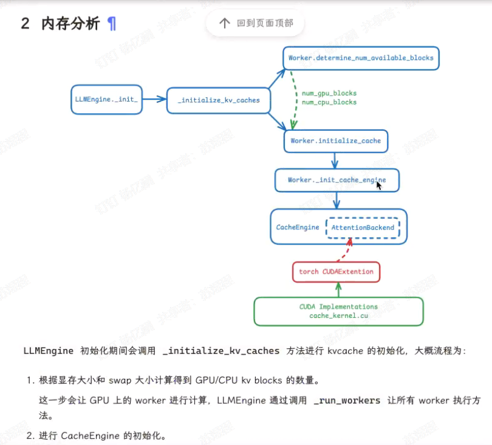

SGLang¶
3/22 基本信息 ¶
解决 CPU 调度 overhead 和 vLLM 互相借鉴 (import vllm) 提供DSL语言供用户编写程序(替代LangChain)
RadixAttention: 树型结构维护 kvcache，利用多轮会话共享部分运行时自动重复使用 kvcache FastConstrainedDecoding:一次decode生成多个token，lookahead投机采样 API Speculative Execution： 推测解码 并行预测多个 Token 推理优化 预加载与缓存 前缀缓存 分支预测（打字中途）
提供的 API 1. 运行时管理 Runtime: 创建并返回运行时实例，用于启动和管理后端服务器 set_default_backend: 设置默认后端执行引擎（如TensorFlow/PyTorch） flush_cache: 刷新后端缓存，清理临时数据 get_server_args: 获取当前后端服务器的配置参数
-
文本生成控制 gen: 核心生成API，支持温度/top-p/top-k等多种采样参数，支持正则表达式约束和选项选择 gen_int: 生成并强制返回整数类型结果 gen_string: 生成并强制返回字符串类型结果 select: 从预定义选项列表中选择结果，支持基于token长度的归一化采样
-
多模态处理 image: 处理图像输入，构建图像处理表达式 video: 处理视频输入，指定视频路径和帧数
-
对话角色管理 system/user/assistant: 自动包裹系统消息、用户输入和助手回复的角色标记 _begin/ _end 系列（如 system_begin）: 手动控制对话角色的开始和结束标记
-
函数装饰器 function: 将普通Python函数转换为SGLang可执行函数，支持API规范令牌数量配置
Python 1 2 3 4 5 6 7 8 9 10 11 12 13 14 15 16 17 18 19 20 21 22 23 24 25 26 27 28 29 30 31 32 33 34 35 36 37 38 39 40 41 42 43 44 45 46 47 48 49 50 51 52 53 54
from sglang import function, gen, gen_string, image, video, system, user, assistant, Runtime # 定义带装饰器的对话函数 @function def multi_modal_chat(): # 系统角色设定 yield system("你是一个多模态AI助手，可以分析用户提供的图片和视频") # 第一轮用户交互（文本+图片） yield user( image("描述这张图片内容：", "path/to/image.jpg") + "并推荐一个相关短视频" ) yield assistant( "这张图片展示了... 我推荐以下视频：" + video("path/to/video.mp4", num_frames=24) + gen_string(max_tokens=50, temperature=0.7) ) # 第二轮用户交互（视频分析） yield user( "分析这个视频的前10帧：" + video("path/to/surveillance.mp4", num_frames=10) ) yield assistant( "视频分析结果：运动轨迹..." + gen( stop="。", return_logprob=True, regex=r"\d{2}:\d{2} [AP]M" # 用正则约束时间格式 ) ) # 结构化数据生成 yield user("生成会议纪要JSON，包含时间和议题") yield assistant( gen( name="meeting_minutes", dtype=dict, max_tokens=200, temperature=0.0 ) ) # 启动运行时 runtime = Runtime() runtime.set_default_backend("vllm") # 执行对话 response = multi_modal_chat.run() print(f"最终输出：{response['meeting_minutes']}") # 清理资源 runtime.flush_cache()
3/23 模型部署 ¶
sglang cve
没搜到？
import vllm
本地部署sglang,vllm
sglang 加载模型 / 执行模型的 code
3/24 25 vllm CVE¶
CVE-2025-29783:Remote Code Execution via Mooncake Integration
Mooncake ZMQ/TCP暴露管道
recv_tensor() calls _recv_impl which passes the raw network bytes to pickle.loads().反序列化任意代码执行
Solution:pickle.loads() -> safetensors
CVE-2025-29770:vLLM denial of service via outlines unbounded cache on disk
wvllm/model_executor/guided_decoding/outlines_logits_processors.py无条件使用缓存，导致文件系统空间不足
CVE-2025-25183:hash()
CVE-2025-24357:malicious model RCE by torch.load in hf_model_weights_iterator
VLLM/model_executor/weight_utils.py``torch.load 加载恶意 pickle 数据时，在解封期间执行任意代码
Solution:Set weights_only=True
CVE-2024-9053: AsyncEngineRPCServer Remote Code Execution
AsyncEngineRPCServer()核心功能run_server_loop() 调用函数 _make_handler_coro()对收到信息cloudpickle.loads()
CVE-2024-9052:RCE via distributed training API
vllm.distributed.GroupCoordinator.recv_object() calls pickle_loads()
SGLang 中是否有使用 pickle_loads()
| Python | |
|---|---|
1 2 3 4 5 6 7 8 9 10 11 12 13 14 15 16 17 18 19 20 21 22 23 24 25 26 27 28 29 30 31 | |
内存管理 ¶
模型部署框架 crash Tensorflow恶意攻击 - Model Stealing:通过黑盒查询（API调用）窃取模型的参数或结构。 - 训练阶段植入后门代码（如恶意TensorFlow算子） - 通过恶意序列化的TensorFlow模型（如.pb文件）触发远程代码执行（RCE）
诱导 LLM 产生某一输出并据此 eval 代码攻击

桂：image 迅：性能测试 漏洞数据库 淦：加载model 静态分析llama.cpp
vllm,sglang,lightllm,deepspeed,ollama,llama.cpp 框架的异同
rf 陈 load_model
王 model_context_协议 (MCP)
jx 针对aisecurity幻觉的数据库构建自动化的framework
桂 多模态